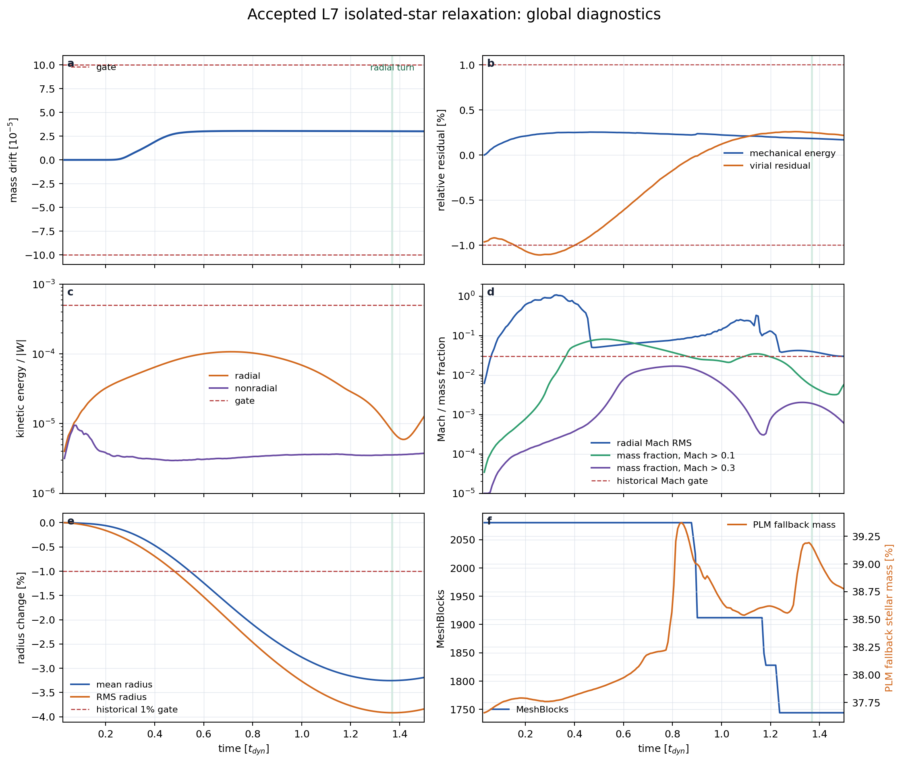
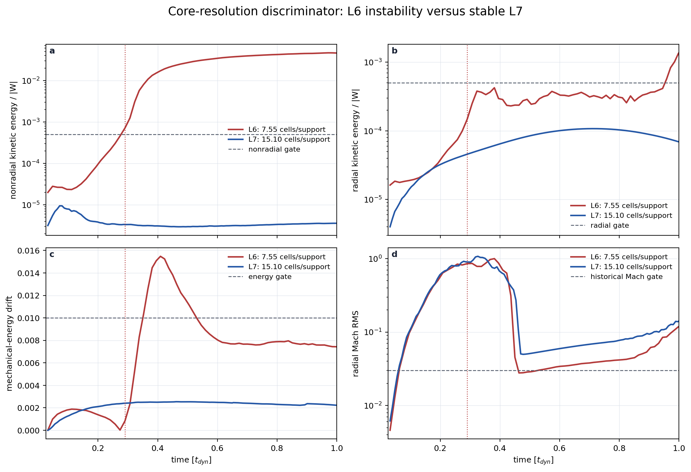
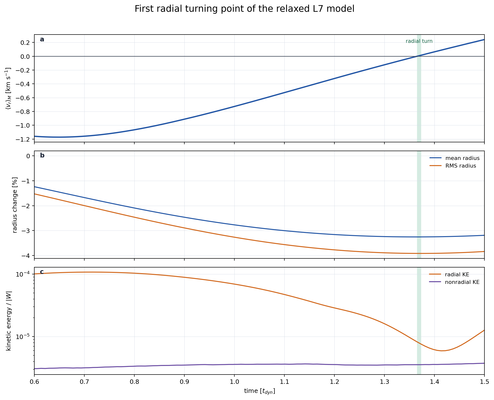
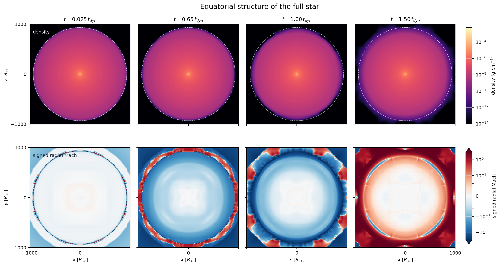
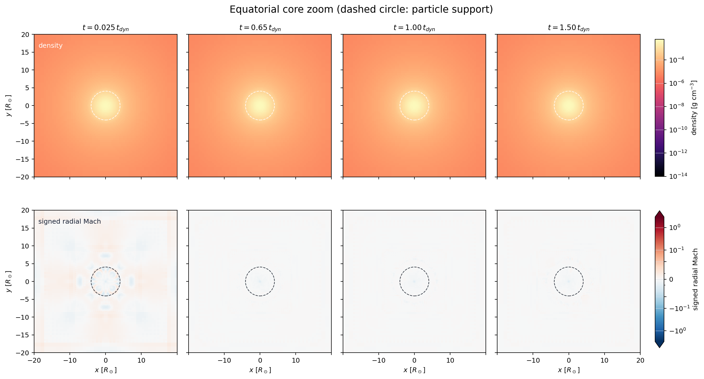
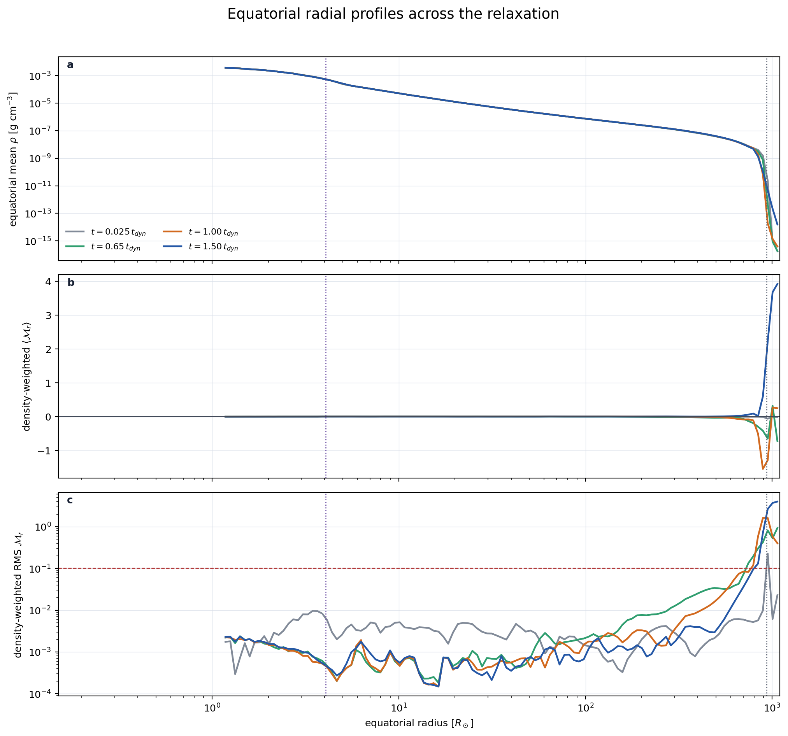
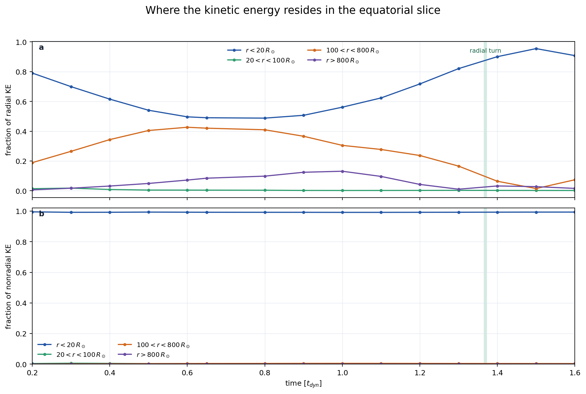

判定
L6ではコアに局在した非動径不安定性が成長します。支持半径の解像度をL7へ倍増するとこのモードは消え、残る運動は外層の有界な動径緩和です。エネルギー成長を伴わず最初の反転点まで到達しています。
| 判定量 | 測定値 | 評価 |
|---|---|---|
| 質量ドリフト | 3.05×10−5 | 合格 |
| 力学的エネルギードリフト | 0.254% | 合格 |
| 動径 KE / |W| 最大値 | 1.08×10−4 | 合格 |
| 非動径 KE / |W| 最大値 | 9.47×10−6 | 合格 |
| 平均半径の最大収縮 | 3.256% | 緩和後の平衡移動として許容 |
| 最終規格化角運動量 | 1.95×10−7 | 無回転と整合 |
全体量の時間発展
緑色の帯が最初の動径反転区間です。半径が収縮・反転する間も、質量とエネルギーは有界に保たれます。

L7が必要な理由
同一の拡散コアモデルでも、支持半径を7.55セルで解像するL6は不安定、15.10セルのL7は安定です。

最初の動径反転点
質量加重平均した動径速度は1.365–1.373 tdynでゼロを横切ります。この時点で動径運動エネルギーはすでに強く減衰しています。

空間分布の時間発展
密度分布はほぼ球対称を維持しています。符号付き動径Mach数では、静かなコアに対して外層の収縮と反転後の膨張が明瞭です。


動径構造と運動エネルギーの局在




再現性と出典
XDのjobs 344891、344983、345249、345480が生成した累積診断量と、代表4時刻の赤道面スライスを使用しています。
採用restart
/work/mizutaniks/wor177/corecut6p28_l7_t1p5_stage3_345480/continuation/mesa_scf_rsg_corecut6p28_l7_4wz.final.rst
SHA-256: 62ee1c4b9c2ec4635d039b7e942108b944d90f6fd2211065256d76cfde90a50b
モデルと数値手法
MESAコアを6.2798 M⊙で拡散的に切除、軟化コア粒子6.2112 M⊙、支持半径4.0548 R⊙。root64 + 中心L7 + 表面テーパーL2、RK4 + 4WZ、FMG重力。本検証にはFLDを含めていません。